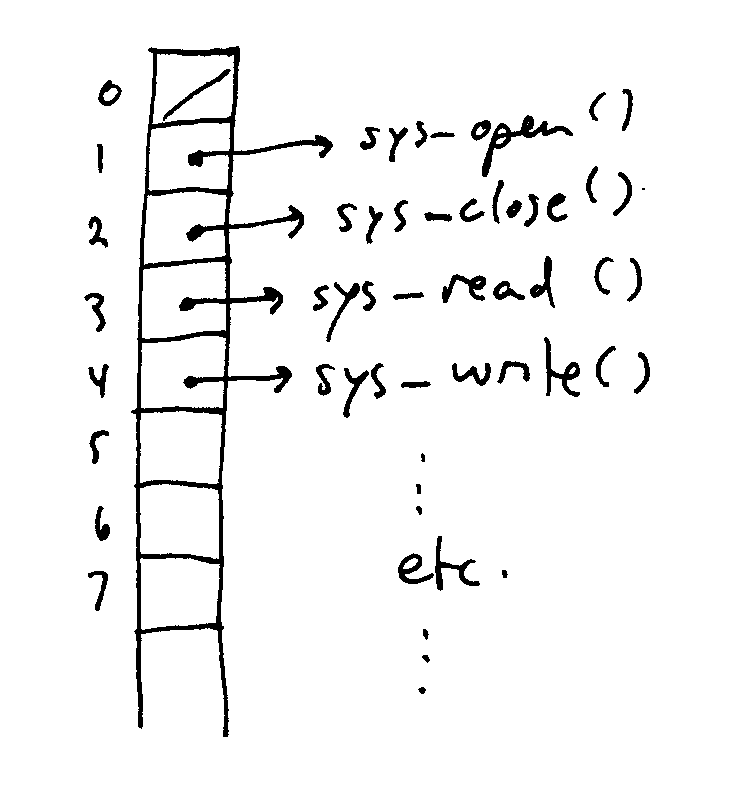
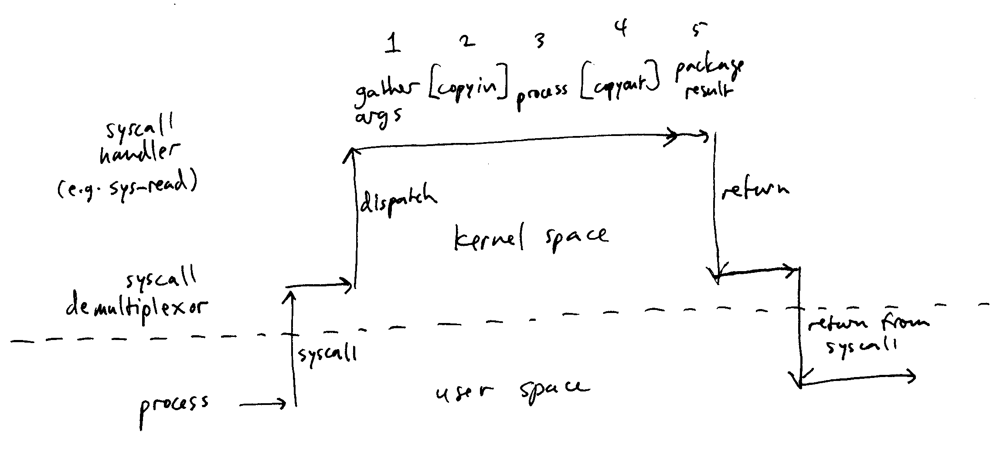

Goals: OS services. System calls.
Services provided by the OS to the user (Silberschatz, pg. 40).
User-oriented services:
System-oriented services:
For each category, ask for suggestions of specific services.
User interface: mechanisms
by which user (human) interacts with the computer and prorgrams running
on the computer. Examples:
Program execution: execute
programs (creating processes). The started process may be interactive, or could be run in batch mode.
I/O: allow processes to read
input and write output to files and devices.
Important: I/O polymorphism. A
unified model by which processes may interact with devices and
files. So, the same program can accept input from the keyboard, a
file, a network connection, etc.
File-system manipulation.
Search for files and directories in a filesystem. Create and
delete files. Format devices to create new filesystems on them.
Communications: facilities
to allow processes to communicate with other processes. (And by
extension, users to communicate with other users.)
Question: what are some OS services that
allow processes to communicate with each other?
Error detection: determine
when attached devices are not operating correctly, and when a process
cannot complete its task.
Resource allocation: [Question: what are some resources that the OS
must allocate?] Memory, disk space, device access, etc. OS
must allow resource allocation policies to be put into effect.
Accounting: keep track of important events, which users logged on,
what resources they used.
Protection and security: make sure that the available resources are
only used by authorized users.
This is obviously an important category of service. Although,
for an OS for a server or embedded system this may be less important.
Command Interpreter
[Question: What are some examples of
command interpreters?] bash, csh, cmd.exe, Monad shell, etc.
GUI
Window system: is this really part of the OS? Why or why not?
[Question: what is a system call?] Have talked about these
already. Also known as software interrupts (and on many CPUs that
is literally how they are implemented).
System calls are how processes request services (e.g., I/O) from the
OS kernel. Results in a transfer of control from the user process
to the kernel.
Example: a program that copies data from one file to another.
(E.g., Unix cp program,
Windows copy command.)
Requirements:
System calls used (e.g., on Unix/Linux):
Invoking a system call inherently processor and OS-specific.
E.g., on Linux for x86 systems, put system call parameters in processor
registers, issue int 0x80
instruction. Return value will be in the eax register.
Most programs use API
(Application Programming Interface) functions, which build higher-level
functions on top of system calls.
Why use API functions?
Examples of common APIs:
Observations:
Generally, each system call has a wrapper function in a library that
is available (linked by) every program on the system.
The wrapper function has 3 main tasks:
Generally, each system call supported by the operating system is
assigned a unique number. The system call number is an index into
a table of system call handler functions inside the operating system
kernel. Recall that a system call appears to the OS kernel like a
hardware interrupt. The kernel has a system call interrupt
handler whose task is to inspect the CPU registers (system call
parameters) to find out which system call has been invoked, and then
dispatch the system call to the appropriate handler function in the
system call handler table. This is known as demultiplexing the system call.

An important issue in handling a system call is transferring between
the process (user space) and the kernel (kernel space). E.g., the
read system call requests that data from a file be copied into the
process's memory. The read system call wrapper function in Unix
looks like this:
int
read(int fd, char *buf, size_t len);
The buf parameter contains the address of the memory buffer where
the process would like the file data to be copied.
Question: what kind of checking must the kernel do on the system
call parameters? What could happen if the kernel does not
properly check the system call parameters?
Copying data into and out of the kernel's address space is known as
copyin and copyout. These must be done with extreme care to avoid
allowing a malicious process from accessing unauthorized data, or
overwriting kernel data structures.
E.g., a kernel data structure associated
with each process describes what user account the process belongs
to. Overwriting this kernel data structure could allow the
process to masqurade under a different user account, thus expanding its
privileges. E.g., copy the id of the admin account into this data
structure.

Generally, system calls exist to allow processes to request OS
services. Therefore, one or more system calls generally exists
for each OS service.
[Question: ask for examples of possible system calls in each
category of service.]